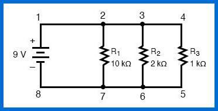

¡Bienvenidos Estudiantes!
Si quieren ver más temas relacionados a la física pueden ver el temario accediendo nuevamente al apartado superior y seleccionando el tema de su elección.

El comportamiento de un circuito depende totalmente de la configuración de sus componentes. Según su configuración de conexión, estos circuitos se pueden clasificar en Circuito eléctrico en paralelo y Circuito en serie. Este artículo revela el significado de un circuito paralelo, cómo hacer un circuito paralelo, sus diversas características, aplicaciones y a como resolver un circuito en paralelo.
En un circuito paralelo, hay más de un resistor (bombilla, por ejemplo) y están conectados por muchos caminos. Esto significa que la electricidad (electrones) puede viajar desde un extremo de la batería a través de muchas ramas hasta el otro extremo de la batería.
Otra definición es: Se llama circuito paralelo cuando dos o más componentes están conectados al mismo nodo y ambos lados de los componentes están conectados directamente a la batería o cualquier otra fuente. La corriente en un circuito eléctrico paralelo tiene dos o más caminos para fluir a través de él.
Echemos un vistazo a algunos ejemplos de circuitos paralelos. Comenzaremos con un circuito paralelo que consta de tres resistencias y una sola batería:
Primero tenemos que tener en cuenta que el voltaje es igual en todos los componentes del circuito.
Por lo tanto, en el circuito anterior, el voltaje en R1 es igual al voltaje en R2 que es igual al voltaje en R3 que es igual al voltaje de la batería.
Esta igualdad de voltajes se puede representar en la siguiente ecuación:
VT = VR1 = VR2 = VR3 = 9V
Al igual que en el caso de los circuitos en serie, se aplica la misma advertencia para la Ley de Ohm: los valores de voltaje, corriente y resistencia deben estar en el mismo contexto para que los cálculos funcionen correctamente.
Sin embargo, en el circuito de ejemplo anterior, podemos aplicar inmediatamente la Ley de Ohm a cada resistor para calcular su corriente porque conocemos el voltaje de cada resistor (9 voltios) y la resistencia de cada resistor:
En este punto, todavía no sabemos cuál es la corriente total o la resistencia total para este circuito paralelo, por lo que no podemos aplicar la Ley de Ohm en la columna derecha («Total»). Sin embargo, si pensamos cuidadosamente sobre lo que está sucediendo, debería ser evidente que la corriente total debe ser igual a la suma de todas las corrientes de los resistores individuales:
A medida que la corriente total sale del terminal positivo (+) de la batería en el punto 1 y viaja a través del circuito, parte del flujo se separa en el punto 2 para pasar por R1, otros se divide en el punto 3 para pasar por R2, y el resto pasa por R3. Al igual que un río que se ramifica en varias corrientes más pequeñas, las tasas de flujo combinadas de todas las corrientes deben ser iguales a la tasa de flujo de todo el río.
Lo mismo ocurre cuando las corrientes a través de R1, R2 y R3 se unen para regresar al terminal negativo (-) de la batería hacia el punto 8: el flujo de corriente desde el punto 7 al punto 8 debe ser igual a la suma de las corrientes a través de R1, R2 y R3.
Entonces decimos que: la corriente total del circuito es igual a la suma de las corrientes de derivación individual.
Con este principio, podemos completar el espacio de Corriente Total en nuestra tabla con la suma de IR1, IR2 e IR3:
Finalmente, aplicando la Ley de Ohm a la columna derecha («Total»), podemos calcular la resistencia total del circuito:
Tenga en cuenta algo muy importante aquí. La resistencia total del circuito es de solo 625 Ω: menos que cualquiera de los resistores individuales. En el circuito en serie, donde la resistencia total era la suma de las resistencias individuales, el total debía ser mayor que cualquiera de los resistores individualmente.
Aquí en el circuito paralelo, sin embargo, ocurre lo contrario: decimos que las resistencias individuales disminuyen en lugar de sumar para hacer el total.
Este principio completa nuestra tríada de «reglas» para circuitos paralelos, así como se descubrió que los circuitos en serie tienen tres reglas para voltaje, corriente y resistencia.
Matemáticamente, la relación entre la resistencia total y las resistencias individuales en un circuito eléctrico en paralelo se ve así:
La idea básica de una conexión «paralela», es que todos los componentes están conectados entre sí. En un circuito paralelo, nunca hay más de dos nodos comunes, sin importar cuántos componentes estén conectados. Existen muchos caminos para el flujo de corriente, pero solo un voltaje es igual para todos los componentes.
En resumen, un circuito paralelo se define como uno donde todos los componentes están conectados entre sí a través de los terminales. A partir de esta definición, se siguen tres reglas de circuitos paralelos:
Al igual que en el caso de los circuitos en serie, todas estas reglas encuentran su raíz en la definición de un circuito paralelo. Si comprende completamente esa definición, entonces las reglas no son más que notas al pie de la definición.
Los circuitos paralelos son el estándar para el cableado eléctrico del hogar, pero a veces olvidamos por qué. Aquí te mostramos cuatro ventajas que ayudan a hacernos la vida más fácil.
Cuando enciende un dispositivo, no necesariamente quiere encender todos los demás.
En contraste, un circuito en serie solo tiene una vía para que fluya la electricidad.
La mayoría de los electrodomésticos requieren al menos 110 voltios de electricidad.
Los circuitos paralelos también permiten agregar componentes en el circuito sin cambiar el voltaje.
En un circuito en serie, agregar más componentes al circuito aumenta la resistencia, lo que significa que la corriente eléctrica disminuye.
Un diseño de circuito paralelo es fácil de diseñar para cualquier contratista eléctrico.
Si el contratista cumple con los estándares y códigos aprobados por la industria, puede contar no solo con un circuito eléctrico confiable sino también para su hogar.
Si los componentes comparten dos nodos comunes, están en paralelo. Aquí hay un ejemplo de esquema de tres resistencias en paralelo con una batería:
Desde el terminal positivo de la batería, la corriente fluye a R1, R2 y R3. El nodo que conecta la batería a R1 también está conectado a los otros resistores. Los otros extremos de estos resistores se unen de manera similar y luego se vuelven a unir al terminal negativo de la batería. Hay tres caminos distintos que la corriente puede tomar antes de regresar a la batería, y se dice que los resistores asociados están en paralelo.
Al igual que un río que se bifurca, luego se une al otro lado de una isla, el circuito paralelo transporta electricidad en sus dos ramas. Al igual que el río, la potencia disminuye ligeramente, pero la electricidad fluye a través de ambas ramas.
En el caso de que una rama de un río se interrumpa, tal vez por represarse, el río aún fluye a través de la otra rama. Del mismo modo, si el circuito en una rama del circuito paralelo se interrumpe, por ejemplo, con una bombilla rota, el otro lado del circuito paralelo continuará funcionando normalmente.
Un circuito paralelo tiene como función mantener el flujo de electricidad cuando se interrumpe una vía. Un buen ejemplo son las lámparas que usan múltiples bombillas. Cuando una sola bombilla en el dispositivo se apaga, el dispositivo de iluminación continúa funcionando. Esto se debe a que, en cada receptáculo de luz, hay un circuito paralelo que permite que la electricidad fluya alrededor del foco que no funciona.
Dos o más componentes del circuito están conectados a través de una fuente de voltaje común para formar un circuito eléctrico en paralelo. La siguiente imagen muestra un circuito paralelo típico donde los resistores (R1, R2, R3, R4) están conectados en paralelo. Ambos lados de los resistores están conectados directamente a la fuente de voltaje. La ruta paralela se llama rama y el voltaje en todas las ramas es el mismo, pero la corriente puede ser diferente.

En el siguiente video mostraremos como funciona un circuito en paralelo